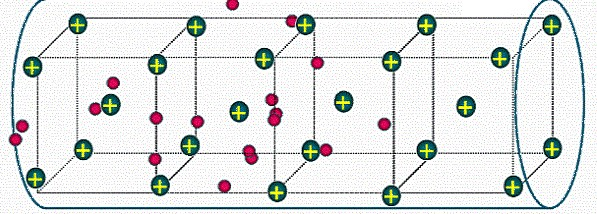
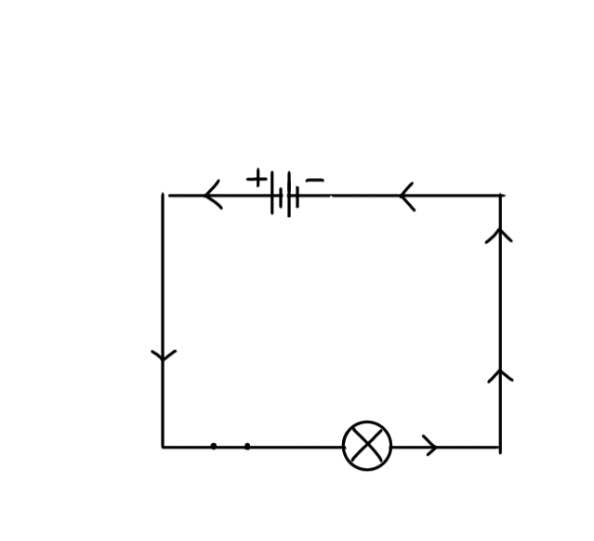

💡 Mẹo học nhanh
⚡ Dòng điện = electron chuyển động
🔋 Có nguồn điện + mạch kín → mới có dòng điện
📘 Học bản chất trước rồi mới học công thức
⚡ Dòng điện
Hiểu bản chất dòng điện thay vì học thuộc lòng
1
Định nghĩa
Dòng điện là sự chuyển dời có hướng của các hạt mang điện.
💡 Khi electron hoặc ion di chuyển theo một hướng → tạo thành
dòng điện.
\( I = \frac{q}{t} \)

Dòng electron chuyển động trong dây dẫn
2
Bản chất vật lý
Trong kim loại, dòng điện thực chất là sự chuyển động của electron tự do.
- ✅ Electron chạy từ âm → dương
- ✅ Chiều dòng điện quy ước: dương → âm
⚡ Đây là quy ước lịch sử được dùng trong toàn bộ vật lý điện.

Chiều electron và chiều dòng điện quy ước
3. Công thức dòng điện
\( I = \frac{q}{t} \)
- I: cường độ dòng điện (A)
- q: điện lượng (C)
- t: thời gian (s)
👉 Điện tích đi qua càng nhiều hoặc thời gian càng ngắn → dòng
điện càng lớn
4. Điều kiện có dòng điện
🔋 Nguồn điện
Tạo hiệu điện thế để electron di chuyển
🔌 Mạch kín
Tạo đường đi hoàn chỉnh cho dòng điện
5. Ví dụ
Cho điện lượng: q = 6C
Thời gian: t = 2s
\( I = \frac{6}{2} = 3A \)
👉 Dòng điện trong dây là 3 Ampe
📌 Tóm tắt nhanh
- Dòng điện = chuyển động có hướng của điện tích
- Chiều quy ước: dương → âm
- \( I = \frac{q}{t} \)
- Cần nguồn điện + mạch kín